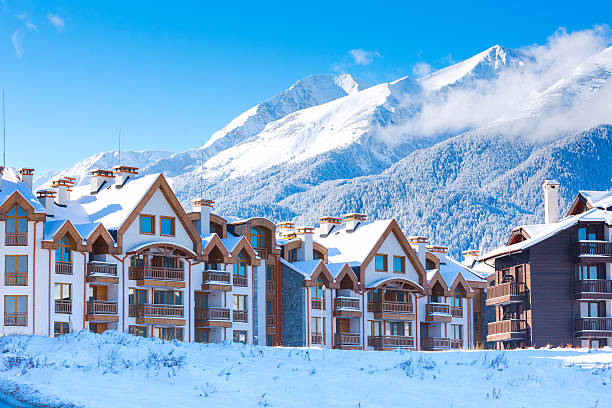

Bulgarian Ski Resorts
 Bulgaria is a country famous for its ski resorts. Bansko, Borovets, Pamporovo, Vitosha... Read these names, and you can easily hear how the snow rustles under the skis that are rapidly rushing along the ski slope, how the adrenaline boils in the blood, how the breathtaking beauty of all the surrounding beauty takes your breath away. .. And all this is Bulgaria, a country that will not leave anyone indifferent.
Today, ski resorts in Bulgaria are becoming more and more popular. And there are several good reasons for this. They are pretty cheap, and almost everyone can afford a trip there. In addition, it is in this country that there is no language barrier, and tourists from Russia feel almost at home here. But this is very important - to be understood. And it’s amicable to know that in a European country, they understand you so well and treat you so well.
There is one more feature of the ski resorts in Bulgaria. There are slopes here that can be enjoyed not only by experienced skiers, but even those new to skiing. There are also unique trails for children.
Bulgaria is a country famous for its ski resorts. Bansko, Borovets, Pamporovo, Vitosha... Read these names, and you can easily hear how the snow rustles under the skis that are rapidly rushing along the ski slope, how the adrenaline boils in the blood, how the breathtaking beauty of all the surrounding beauty takes your breath away. .. And all this is Bulgaria, a country that will not leave anyone indifferent.
Today, ski resorts in Bulgaria are becoming more and more popular. And there are several good reasons for this. They are pretty cheap, and almost everyone can afford a trip there. In addition, it is in this country that there is no language barrier, and tourists from Russia feel almost at home here. But this is very important - to be understood. And it’s amicable to know that in a European country, they understand you so well and treat you so well.
There is one more feature of the ski resorts in Bulgaria. There are slopes here that can be enjoyed not only by experienced skiers, but even those new to skiing. There are also unique trails for children.
 One of the most beautiful places in Bulgaria is Bansko. This cute, tiny, well-kept town is located among the high mountains surrounding it on all sides. And this gives Bansko a unique charm and incredible popularity. Bansko is perfect for family holidays. A great many family boarding houses and hotels have been built here. The resort is located in the southwestern part of Bulgaria on the territory of the Pirin National Park. But Bansko is not just a resort. It’s not just a bunch of hotels and guesthouses built for the delight of tourists. This is an ancient Bulgarian town with its history, traditions and monuments. And this is what makes Bansko the most popular resort in Bulgaria. Bansko is located 160 kilometres from the airport in Sofia and 220 kilometres from the airport in Plovdiv. So, getting to Bansko itself will not be difficult. There are direct flights from both airports that take tourists to the heart of the mountains - the ski resort of Bansko. It must be said that only Bansko, of all the resorts in Bulgaria, has the most extended season for skiers. It begins at the very beginning of December and ends only in May. In addition to the ski slopes themselves in Bansko, you can simply walk along the streets and look at the houses of the local residents. It must be said that most of them were built in the 18th and 19th centuries, and people are very concerned about the safety of their homes. In the very centre of the city, there is the Orthodox Church of the Holy Trinity, which was built in 1835. In addition, there are a lot of mineral springs located in the city and near it.
Another ski resort in Bulgaria, Borovets, is no less popular. It is located 70 kilometres from Sofia on the slope of Mount Rila. Unlike Bansko, Borovets is not just a town. This place was founded as a hunting ground, and was the most popular place among the Bulgarian kings. But time has passed, and today, anyone can enjoy this place's beauty. And the knowledge that real kings once lived and hunted here adds some piquancy. This is where the longest and most comfortable ski slopes are located. It is here that the coaches are not ordinary people - ski lovers, but real athletes, some of whom once competed at the Olympics and won medals. This resort town has a considerable number of hotels. After all, more than one thousand people vacation here throughout the entire winter season. And the service in these hotels is always maintained at a very high level. Borovets is a top-category resort. It is impossible to forget the evergreen forests surrounding it on all sides. It is impossible to ignore the fresh mountain air, which smells so unique and makes you want to breathe more and more deeply. It is impossible to forget the ski slopes, which are equipped to the highest standard, and skiing, which brings a lot of positive emotions. It is impossible to forget Bulgaria itself, which gives its tourists all the kindest and most precious things that this country has. Click here for more information about Bulgarian Ski Resorts.